Etapa de sensado
Mesurando, principios de transducción, clasificación de sensores y caracterización estática y dinámica de sistemas de medición.
Objetivos y secuencia de trabajo
Fundamentos de sensado
Identificar el mesurando; distinguir sensor y transductor; clasificar sensores por señal, energía, magnitud y principio físico. Introducir la curva de calibración, la sensibilidad y los errores estáticos.
Actividad: visualizar el video 1 y elaborar un resumen manuscrito de los conceptos fundamentales.
Caracterización estática
Aplicar la metodología de caracterización utilizando conjuntos de datos experimentales de la guía: puntos ascendentes y descendentes, ajuste lineal, sensibilidad, offset, no linealidad e histéresis.
Actividad: desarrollar los ejercicios de calibración y documentar los cálculos, gráficas y observaciones.
Fundamentos de ingeniería
1. Mesurando y sensor
El mesurando es la magnitud que se desea medir. Un sensor transforma la información asociada a esa magnitud en una salida que puede ser adquirida o procesada por un sistema electrónico. En la caracterización interesa conocer la función que relaciona la entrada x y la salida y.
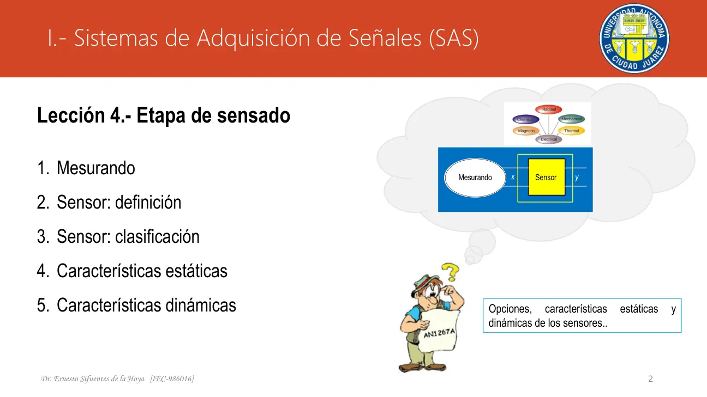
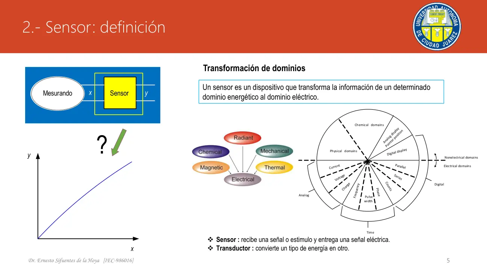
2. Clasificación de sensores
Los sensores pueden agruparse por la magnitud medida, el principio físico, el aporte de energía y el formato de la señal. Una salida analógica codifica información en su amplitud; una salida casi digital, en un parámetro temporal; y una digital, en códigos discretos.
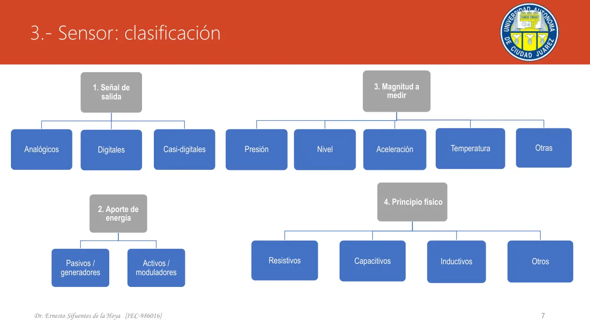
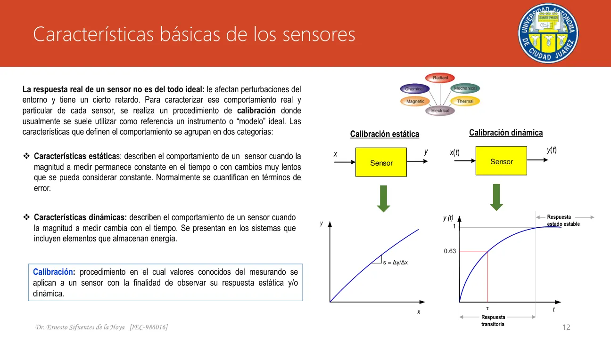
3. Características estáticas
Se evalúan cuando la magnitud de entrada permanece constante o cambia lo suficientemente despacio para considerar despreciable la respuesta transitoria. Entre ellas destacan sensibilidad, offset, exactitud, precisión, no linealidad e histéresis.
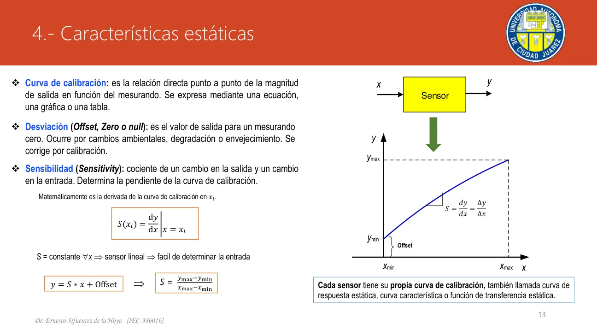
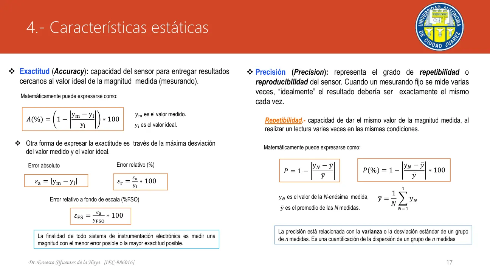
Una recta de mínimos cuadrados permite calcular sensibilidad promedio m y ordenada al origen b. La diferencia entre valores medidos y estimados determina los residuos y permite estudiar la no linealidad.
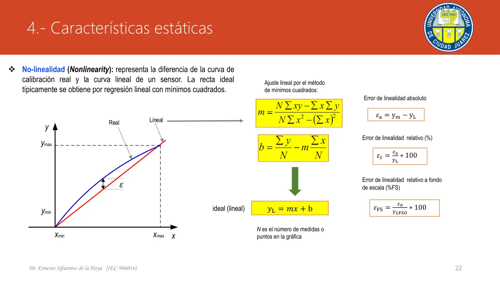
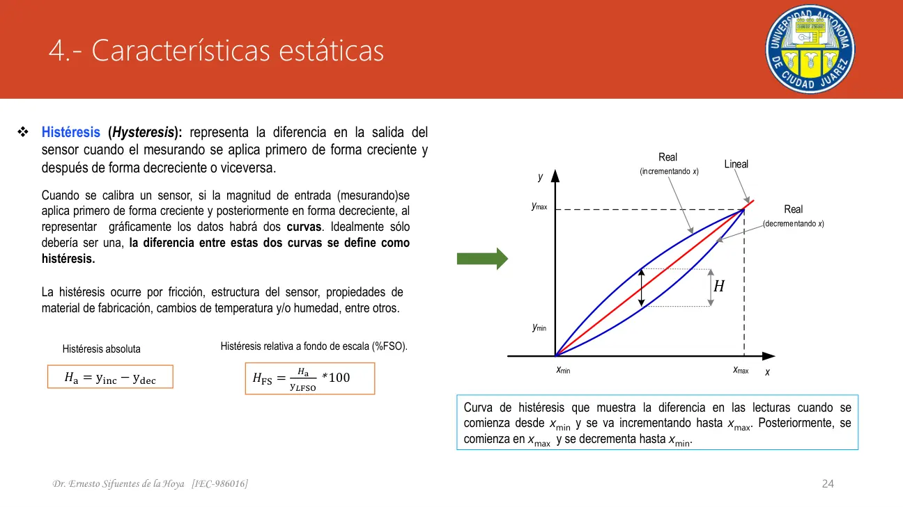
4. Características dinámicas
Describen la respuesta de un sensor cuando el mesurando cambia con el tiempo. En primer orden, la constante de tiempo determina la rapidez de respuesta; en segundo orden intervienen además la frecuencia natural y el amortiguamiento.
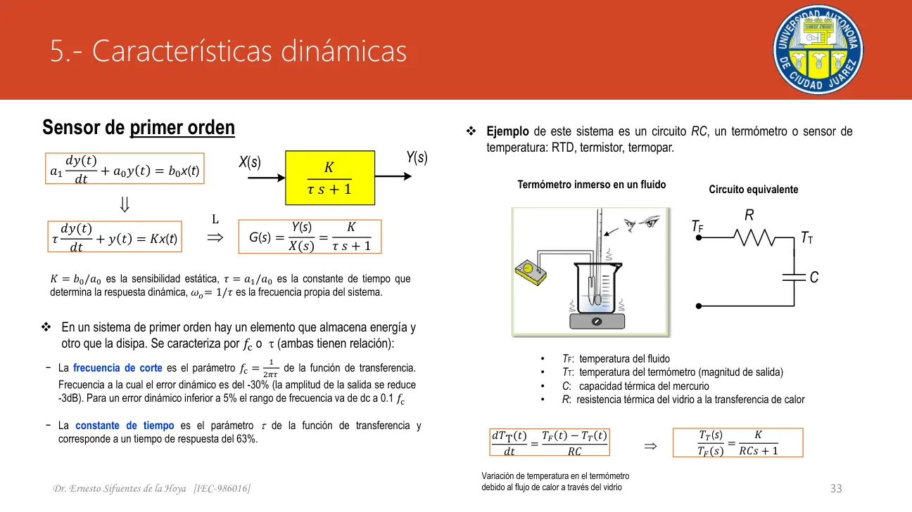
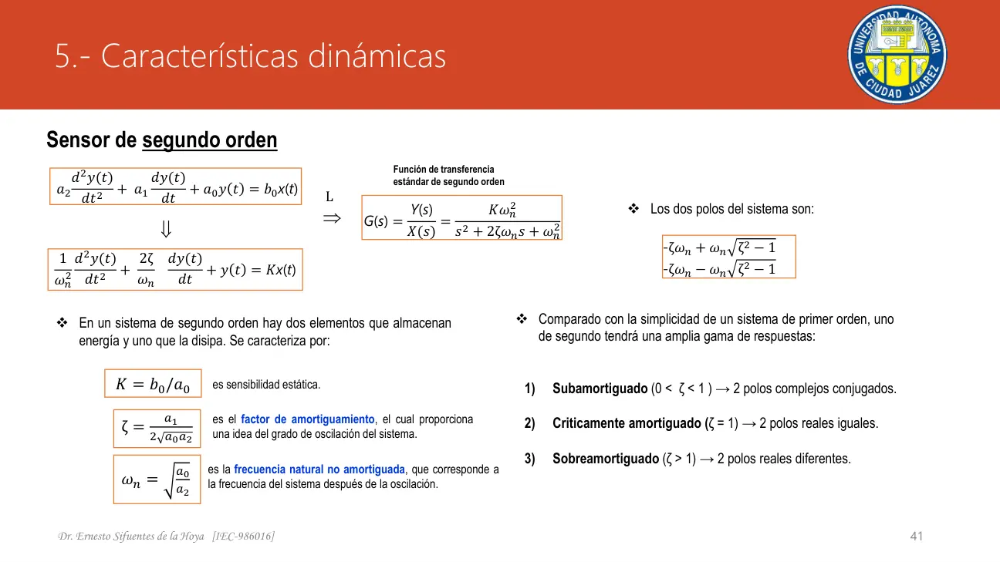
A t = τ, la respuesta al escalón alcanza aproximadamente 63.2 % del cambio total en un sistema de primer orden con condiciones iniciales nulas.
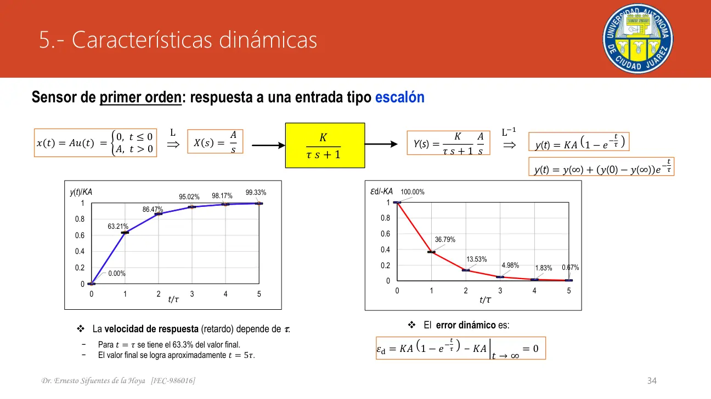
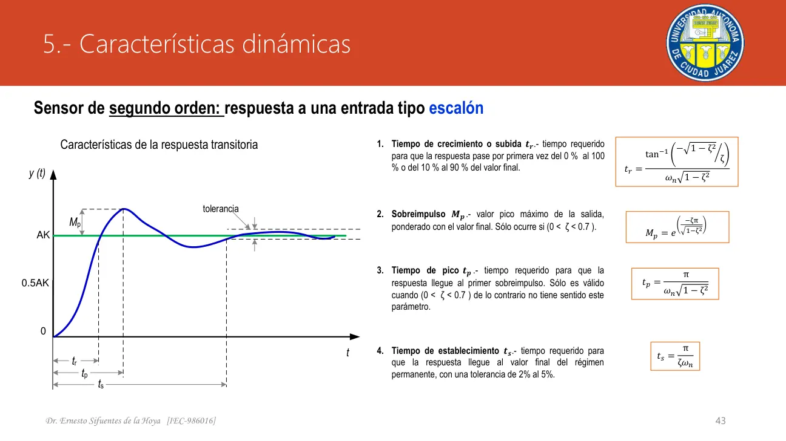
Exposiciones del docente
Etapa de sensado
Identificación del mesurando, tipos de sensores y parámetros básicos de desempeño.
Ver en YouTubeCaracterización estática
Metodología de calibración y análisis de resultados experimentales.
Ver en YouTubeLos videos requieren conexión a Internet. Si el navegador impide su reproducción incrustada, utilice «Ver en YouTube».
Laboratorio interactivo · Calibración estática
Utilice los datos proporcionados en los ejercicios de la metodología. Puede modificar lecturas, recalcular el ajuste, visualizar la curva de calibración y exportar un CSV con sus resultados.
| Mesurando x | Salida subida y↑ | Desviación estándar s |
|---|
Los valores precargados proceden de los ejercicios originales. La regresión, el error de linealidad y la histéresis se calculan a partir de la tabla visible. Los valores no representan mediciones nuevas del estudiante.
Simulador · Respuesta dinámica del sensor
Explore el comportamiento de un sensor ideal de primer orden ante una entrada escalón. Los parámetros son didácticos y no proceden de mediciones de la planta.
Reto: modifique τ y describa cómo cambia el tiempo requerido para alcanzar el 63.2 % del valor final. Explique por qué una sensibilidad K elevada no implica una respuesta más rápida.
Actividad L4 · Caracterización estática
Procedimiento de medición
- Identifique el mesurando, rango, sensor bajo prueba y referencia, condiciones de operación e instrumentos requeridos.
- Defina al menos 10 puntos dentro del rango y registre múltiples lecturas en cada punto con condiciones controladas.
- Repita el barrido en sentido ascendente y descendente para estimar la histéresis.
- Calcule medias y desviaciones estándar, trace la curva de calibración y estime sensibilidad y offset por regresión.
- Calcule no linealidad, contraste con el patrón cuando sea apropiado y redacte la discusión sobre incertidumbre, repetibilidad y validez del procedimiento.
Ejercicio 1 · Temperatura TD5A
Conjunto de datos de calibración con sensor LM35 como referencia; compare la curva de resistencia con el modelo del TD5A. Distinga las lecturas del documento del desempeño medido en su propio laboratorio.
Ejercicios 2 y 3
Celda de carga (curvas ascendentes y descendentes) y sensor de velocidad angular (tres ensayos): obtenga sensibilidad, offset, histéresis, precisión y no linealidad según corresponda.
Evidencias: tablas, figuras, cálculos, justificación del método, conclusiones y respuestas al cuestionario. Los CSV de ejemplo son datos de la guía, no resultados experimentales nuevos.
Cuestionario de retroalimentación
Responda las 20 preguntas de la guía de estudio. Sus respuestas se guardan localmente cuando el navegador lo permite y pueden exportarse para respaldo.
1. Defina sensor y transductor.
2. Haga una tabla de clasificación de sensores de acuerdo a: aporte de energía, señal de salida, modo de funcionamiento, relación entrada-salida, principio físico, magnitud medida.
3. ¿Qué es y cuál es la finalidad de la calibración estática de un sensor?
4. Describa el procedimiento para obtener, de forma experimental, la curva de calibración estática de un sensor.
5. Mencione y defina cinco características estáticas de un sensor.
6. Mencione y defina dos características dinámicas de un sensor.
7. ¿Qué es la sensibilidad de un sensor? Indique la sensibilidad de tres sensores comerciales.
8. ¿Qué es la exactitud de un sensor y cómo se expresa numéricamente? Indique la exactitud de tres sensores comerciales.
9. ¿Cuál es la diferencia entre exactitud y precisión de un sensor?
10. Describa el procedimiento para obtener, de forma experimental, la exactitud de un sensor. Dé un ejemplo.
11. Describa el procedimiento para obtener, de forma experimental, la precisión de un sensor. Dé un ejemplo.
12. Describa el procedimiento para obtener, de forma experimental, el error de linealidad de un sensor. Dé un ejemplo.
13. Defina qué es la histéresis de un sensor.
14. Describa el procedimiento para obtener, de forma experimental, la histéresis de un sensor. Dé un ejemplo.
15. ¿Qué es y cuál es la finalidad de la calibración dinámica de un sensor?
16. ¿Qué representa la función de transferencia de un sensor?
17. Un sensor de primer orden se caracteriza por:
18. Un sensor de segundo orden se caracteriza por:
19. Describa el procedimiento para obtener, de forma experimental, el tiempo de respuesta y el error dinámico de un sensor de primer orden a una entrada escalón. Dé un ejemplo.
20. Describa el procedimiento para obtener, de forma experimental, la función de transferencia de un sensor. Dé un ejemplo.
Tutor de aprendizaje con IA
Use la IA para revisar razonamientos y detectar posibles errores; las mediciones, tablas y conclusiones deben ser elaboradas y comprobadas por usted.
Esta sección prepara consultas para un asistente generativo externo; no ejecuta un chatbot ni transmite los datos automáticamente.
Materiales y recursos
45 diapositivas · mesurando, clasificación, características estáticas y dinámicas.
11 páginas · procedimiento, datos reales del ejemplo y tres ejercicios.
20 preguntas conceptuales y metodológicas.